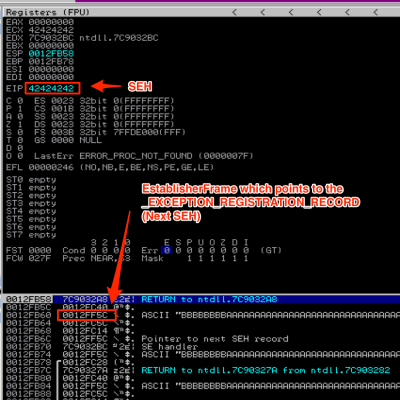

Alternatives to POP/POP/RET
Alternatives to the POP+POP+RET
If you cannot locate a usable POP+POP+RET instruction, you may be able to reach your shellcode in a different manner.
Take another look at the following screenshot from our earlier basic C program example once again.

Not only does ESP+8 point to our Next SEH address – so does ESP+14, ESP+1c, etc. This gives us some additional options for calling this address.
Popad
One such option is the popad, instruction, which I’ve covered in an earlier tutorial. Recall popad pops the first eight values from the stack and into the registers in the following order: EDI, ESI, EBP, EBX, EDX, ECX, and EAX (ESP is discarded). A single popad instruction will therefore leave the address to Next SEH in EBP, EDX, and EAX. To use this method in our SEH exploit we would need to not only find a popad instruction but one that also has a JMP/CALL EBP, JMP/CALL EDX, or JMP/CALL EAX instruction immediately after it.
JMP/CALL DWORD PTR [ESP/EBP + offset]
If there are no usable popad or POP+POP+RET instructions, you may try to jump directly to Next SEH on the stack by finding a JMP or CALL instruction to an offset to ESP (+8, +14, +1c, +2c, etc) or EBP (+c, +24, +30, etc).
The key to both of these options is that just as with POP+POP+RET you must select instructions from modules that were not compiled with SafeSEH or the exploit will fail.
You will also want to avoid addresses containing null bytes.